Releasenotes eBlinqx Hypotheekadvies – December 2025
📢 Onderstaande updates hebben wij in de maand december doorgevoerd:
Vanaf deze release gebruikt eBlinqx Hypotheekadvies geen commerciële rentes meer. Renteaanpassingen (zowel stijgingen als dalingen) worden voortaan uitsluitend verwerkt en getoond op het moment dat deze daadwerkelijk ingaan. Rentedalingen worden dus niet langer vooraf doorgevoerd op basis van de aankondigingsdatum. Deze wijziging zorgt voor een eenduidig en transparant renteverloop binnen eBlinqx Hypotheekadvies en voorkomt onduidelijkheid over reeds doorgevoerde renteaanpassingen.
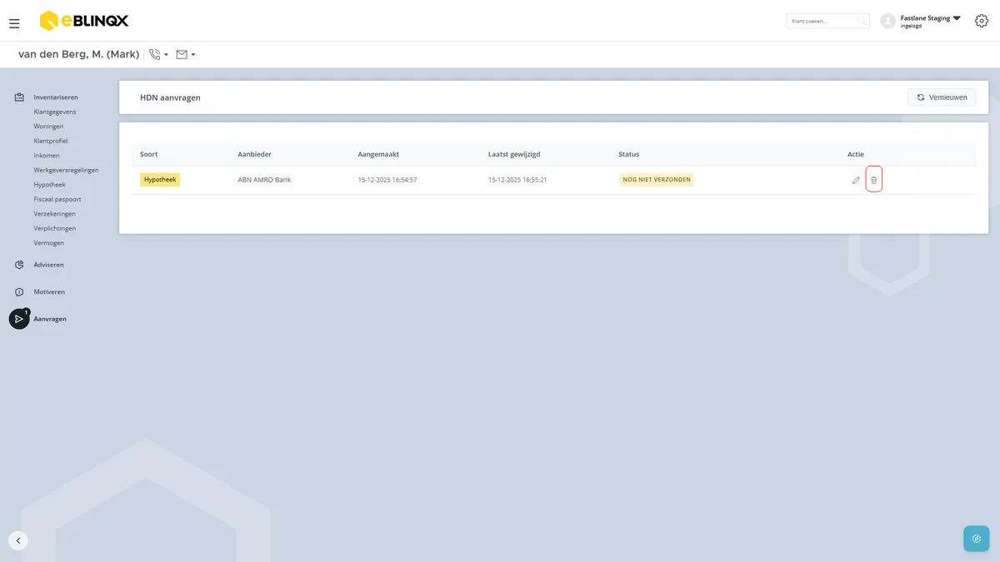
🆕 IT-28772: Verwijderen van niet-verstuurde HDN-aanvragen
Je kunt een HDN-aanvraag met status Concept of Klaargezet nu niet alleen meer via de Werkvoorraad verwijderen, maar ook direct op klantniveau in het klantdossier. Dit werkt met dezelfde vertrouwde validaties, autorisaties en auditlogging, zodat je sneller en eenvoudiger je dossiers opschoont zonder van context te wisselen.
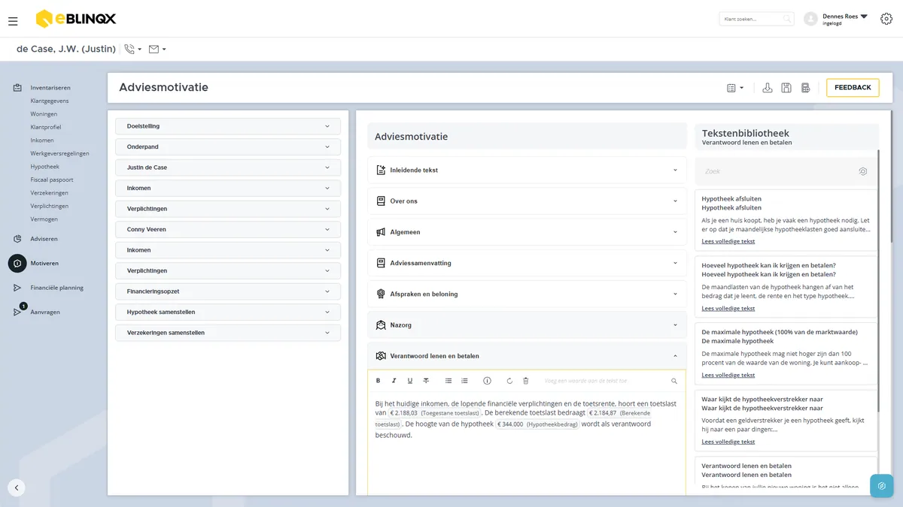
🐞 IT-28784: Motivatiesecties openen nu zonder automatisch naar boven te scrollen
Wanneer je in het adviesdossier een motivatiesectie opent via het grijze hoofdstukbalkje, blijft je scrollpositie nu netjes behouden. De juiste motivatiecontainer klapt direct open zonder ongewenste page refresh of verspringende UI, zodat je prettig in de juiste context kunt doorwerken — ook als je meerdere onderdelen (zoals overlijden, arbeidsongeschiktheid en werkloosheid) achter elkaar opent.
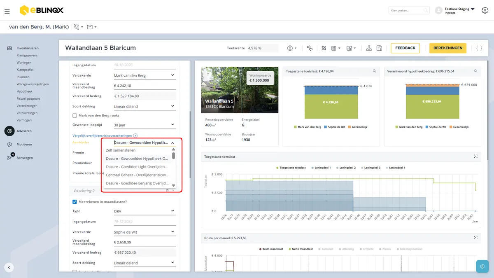
⚙️ IT-26400: Duidelijkere verzekeraarsselectie zonder premies
In de sidebar bij ‘Verzekeringen samenstellen’ zie je in het dropdownmenu nu alleen nog de naam van de aanbieder, zonder premiebedrag. Zo kun je veel sneller en overzichtelijker de juiste verzekeraar kiezen, zowel voor overlijdensrisicoverzekeringen als voor woonlastenverzekeringen. Je aandacht gaat volledig naar de juiste aanbieder, terwijl je de premies op de plek bekijkt waar ze echt relevant en actueel zijn.
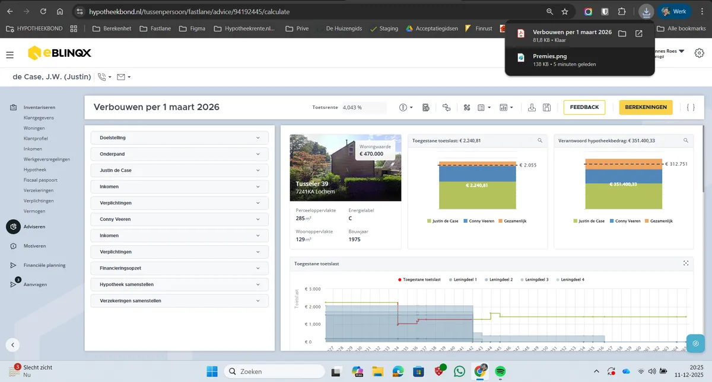
⚙️ IT-28453: Altijd duidelijke bestandsnamen bij downloads
Wanneer je het Klantprofiel of de Financieringsopzet downloadt, krijgen deze bestanden nu automatisch een vaste, herkenbare naam: Klantprofiel.pdf of Financieringsopzet.pdf. Zo vind je jouw documenten voortaan veel sneller terug en voorkom je verwarring wanneer dossiers dezelfde naam hebben.
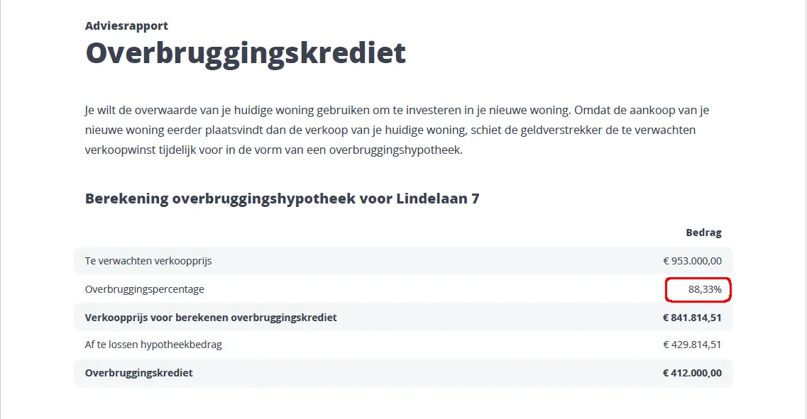
⚙️ IT-28798: Automatisch kloppende overbruggingsberekening bij handmatige invoer
Wanneer je zelf een overbruggingsbedrag invult, zorgt eBlinqx Hypotheekadvies er nu automatisch voor dat het overbruggingspercentage én de bijbehorende verkoopprijs netjes worden herberekend. Zo krijg je altijd een consistente en optisch volledig kloppende presentatie in jouw adviesrapport. Dit geeft je meer duidelijkheid én vertrouwen in de berekening, terwijl je klanten direct profiteren van een helder, transparant overzicht.
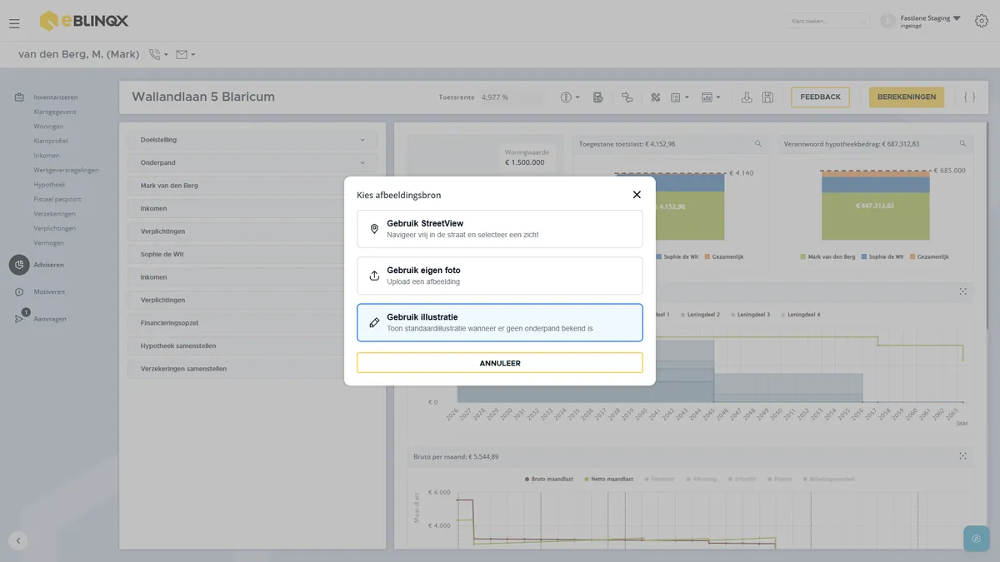
🐞 IT-28826: Rapport met standaardillustratie weer probleemloos opslaan en downloaden
Vanaf nu kun je jouw rapport weer zonder gedoe opslaan, ook als je een standaardillustratie hebt geselecteerd. Je kunt het rapport daarna zoals vertrouwd als PDF downloaden, zodat je jouw klantdossier compleet en up-to-date houdt. Alleen inhoudelijke fouten zorgen nog voor een duidelijke foutmelding, zodat je precies weet wat je moet aanpassen. Rapportdata, inclusief de gekozen illustratie, wordt netjes opgeslagen, terwijl rapporten zonder illustratie gewoon blijven werken zoals je gewend bent.
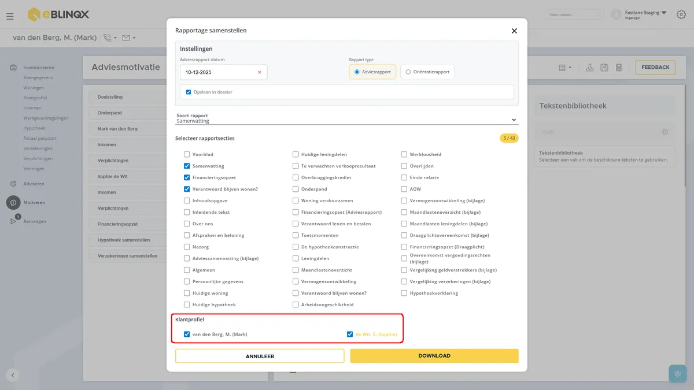
🐞 IT-28821: Klantprofiel altijd probleemloos downloadbaar vanuit rapportmodal
Je kunt het klantprofiel nu weer zonder foutmelding downloaden via het rapportmodal — zowel als los document als wanneer je het meeneemt in een samengesteld adviesrapport. Het document wordt voortaan volledig en correct gegenereerd, zodat je altijd vlot beschikt over alle informatie die je nodig hebt voor jouw advies.
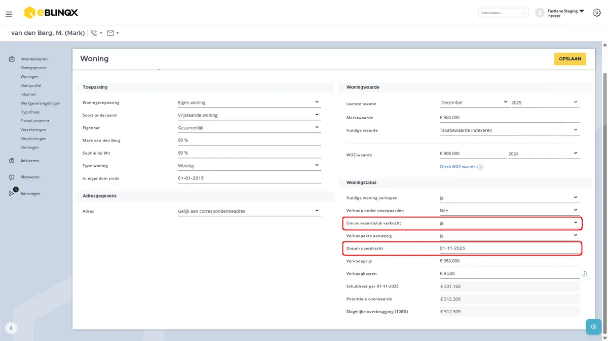
🐞 IT-28706: Overbruggingshypotheek niet langer geprefilled bij verkoop vóór rekendatum
Wanneer de huidige woning onvoorwaardelijk is verkocht en de overdrachtsdatum vóór de rekendatum van de financiering van de nieuwe woning ligt, wordt de overbruggingshypotheek in de financieringsopzet niet langer automatisch geprefilled. Je kunt de gerealiseerde verkoopopbrengst eenvoudig zelf opnemen bij Inbreng eigen geld, zodat jouw financieringsopzet altijd klopt en perfect aansluit op de werkelijke situatie van jouw klant.
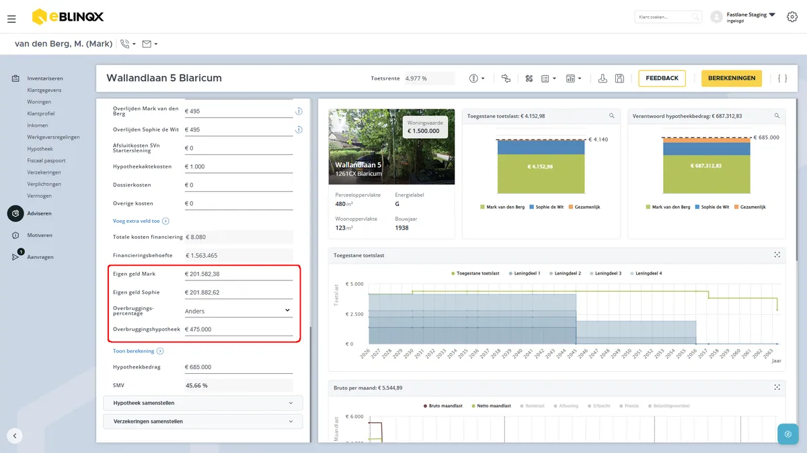
🐞 IT-28773: Handmatig ingevuld overbruggingsbedrag blijft nu altijd bewaard
Met deze wijziging wordt jouw handmatig ingevulde overbruggingsbedrag onder de optie “Anders” voortaan altijd netjes opgeslagen als user override. Het bedrag wordt niet meer automatisch overschreven door een nieuwe 90%-berekening wanneer je het dossier heropent of een herberekening doet. Je ziet bovendien duidelijk aan het blauwe cirkeltje dat je een eigen bedrag hebt ingevoerd. Schakel je weer terug naar de 90%-berekening, dan verdwijnt het cirkeltje en pakt eBlinqx Hypotheekadvies automatisch het berekende bedrag. Zo houd je zelf de regie en hoef je bedragen niet telkens opnieuw in te voeren.
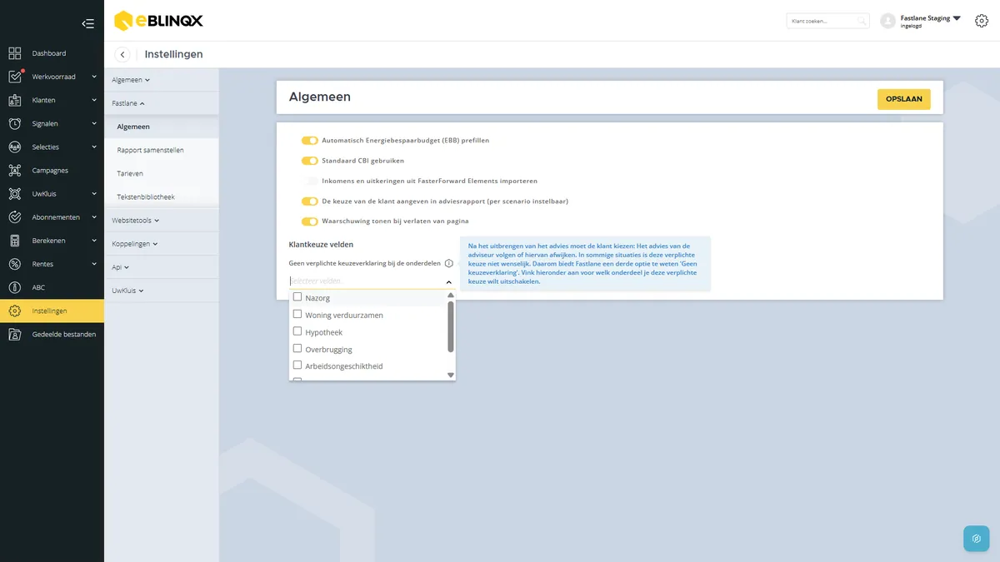
⚙️ IT-28787: Duidelijkere teksten bij klantkeuze-velden voor meer helderheid in jouw instellingen
De klantkeuze-velden in de eBlinqx Hypotheekadvies-instellingen zijn nu voorzien van heldere en volledig vernieuwde teksten. Je ziet voortaan meteen dat het gaat om onderdelen waarvoor je de verplichte keuzeverklaring kunt uitschakelen. Daarnaast geeft een duidelijke infotekst je precies inzicht in wanneer en waarom je kunt kiezen voor de optie Geen keuzeverklaring. Hierdoor stel je jouw processen sneller, bewuster en met meer grip in—helemaal afgestemd op jouw adviespraktijk.
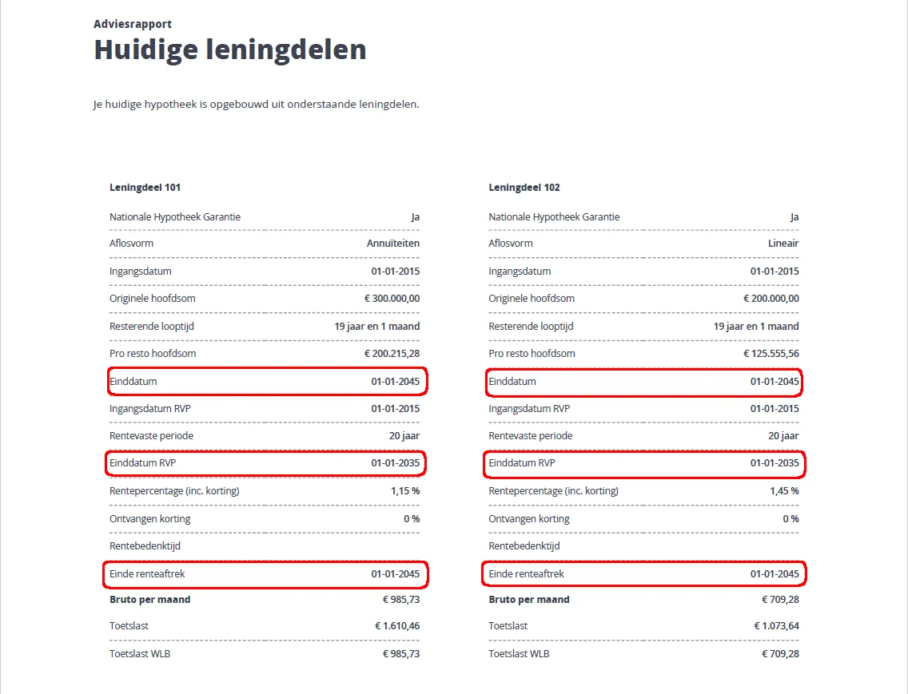
🆕 IT-28796: Adviesrapport opgeschoond én uitgebreid met duidelijke einddatums
Je adviesrapport is nu nog overzichtelijker en waardevoller. De dubbele regels Percentage en Rentevast bij de leningdelen van de nieuwe constructie zijn netjes verwijderd, zodat je rapport helder en zonder herhaling overkomt. Daarnaast kun je jouw klant beter informeren dankzij drie nieuwe velden: Einddatum looptijd, Einddatum rentevastperiode en Einddatum renteaftrek. Deze worden op de juiste plek in het rapport weergegeven, waardoor je direct een compleet en inzichtelijk beeld van de hypotheekconstructie kunt presenteren.
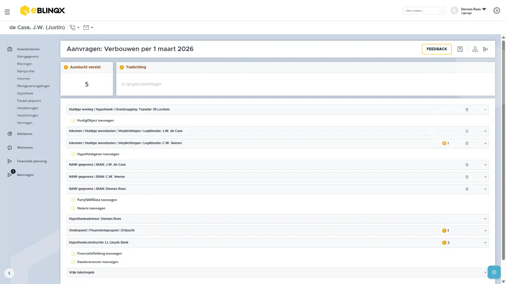
🐞 IT-28740: HDN-validatiemeldingen verdwijnen nu netjes zodra jij het veld corrigeert
Je ziet voortaan alleen nog relevante HDN-validatiemeldingen tijdens het invullen. Zodra jij een veld zoals ObjectSoort of BijzObjectSoort aanpast naar een geldige waarde, verdwijnt de melding direct—precies zoals je gewend bent bij lokale validaties. Dat voorkomt ruis, verwarring en onterecht de indruk dat je iets niet mag invullen. Zo werk je sneller, zorgelozer én met volledige duidelijkheid richting je HDN-bericht.
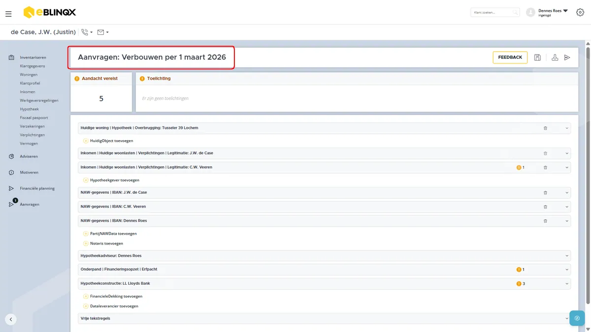
⚙️ IT-5678: Altijd nette weergave van lange HDN-titels
Vanaf nu worden lange titels in het HDN-aanvraagformulier altijd netjes weergegeven. Als een titel te lang is voor de beschikbare ruimte, wordt deze automatisch afgebroken of voorzien van een herkenbare ellipsis (...). Beweeg je muis over de titel en je ziet direct de volledige tekst in een tooltip, zodat je nooit informatie mist. Zo blijft jouw HDN-formulier er op ieder schermformaat professioneel en overzichtelijk uitzien, zonder dat je daar zelf iets voor hoeft aan te passen.
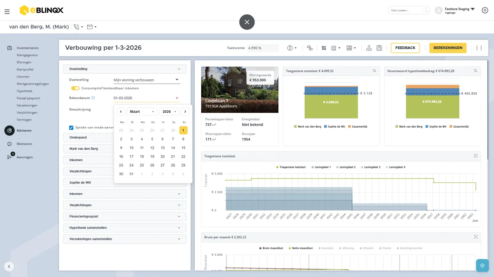
⚙️ IT-28804: Handige datepicker voor al jouw datums in de sidebar
Voortaan vul je Rekendatum, Passeerdatum en Ingangsdatum verzekering in met dezelfde vertrouwde datepicker als in de hoofdcontent. Je kiest eenvoudig een datum via de kalender of typt deze in met een duidelijk masker (dd-mm-jjjj), waardoor je sneller en zorgeloos werkt. De validatie helpt je om altijd geldige datums te gebruiken, inclusief de controle dat de Passeerdatum niet vóór de Rekendatum ligt. Alles sluit mooi aan op de bestaande styling, is volledig met toetsenbord te bedienen en wordt consistent naar de backend gestuurd, zodat jouw dossier altijd netjes en betrouwbaar blijft.
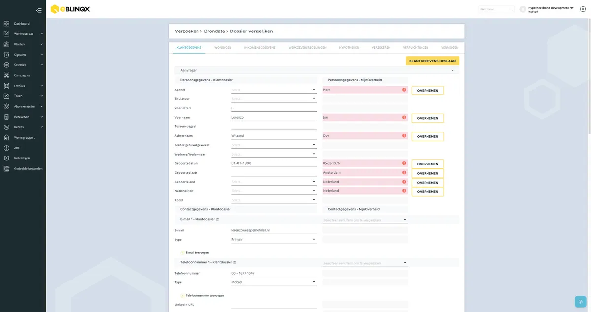
⚙️ IT-XXXX: Voorbereidende werkzaamheden brondata in eBlinqx Hypotheekadvies
We bereiden eBlinqx Hypotheekadvies voor op een nóg efficiëntere inzet van de datavergelijker binnen het inventarisatiegedeelte in Q1-2026. De hoofdstukken uit de datavergelijker worden volledig gelijkgetrokken met de inventarisatie, waardoor Klantgegevens, Woningen, Inkomen, Werkgeversregelingen, Hypotheek, Verzekeringen, Verplichtingen en Vermogen straks precies aansluiten op wat je gewend bent. Zo kun je brondata via VeiligOphalen en Ockto straks nog overzichtelijker vergelijken met de gegevens in jouw eBlinqx Hypotheekadvies-database, wat je helpt sneller én zekerder tot een compleet en betrouwbaar klantbeeld te komen.
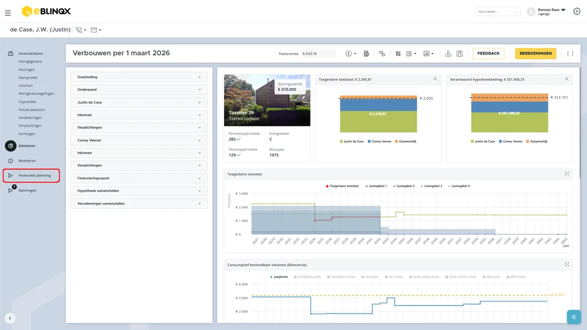
🆕 IT-28807: Directe toegang tot MijnFinRust via nieuwe linkknop
Met deze nieuwe knop navigeer je vanuit eBlinqx Hypotheekadvies nu in één klik naar MijnFinRust. Zo bespaar je tijd en ervaar je een veel vloeiendere overgang tussen beide omgevingen. De knop opent in een nieuw tabblad en volgt volledig de vertrouwde eBlinqx Hypotheekadvies-stijl, zodat hij vanzelfsprekend aanvoelt in jouw workflow. Een mooie eerste stap richting een nog diepere integratie van FinRust in je dagelijkse adviesproces!
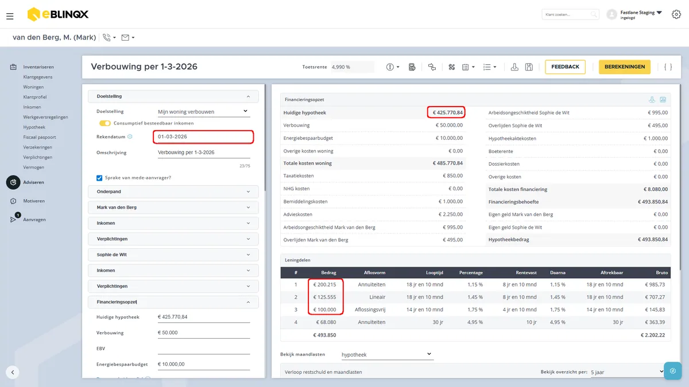
🐞 IT-28744: Juiste pro resto hoofdsom bij verhogingen en datumwijzigingen
Vanaf nu wordt de pro resto hoofdsom in eBlinqx Hypotheekadvies automatisch correct aangepast wanneer je de rekendatum naar de toekomst schuift. Het volledige hypotheekbedrag sluit daardoor weer netjes aan op de som van de leningdelen, zonder dat er onlogische verschillen als “eigen geld” of onterechte foutmeldingen ontstaan. Je hoeft de pro resto hoofdsom niet langer handmatig te corrigeren en je krijgt geen vastlopers of vreemde waarden zoals “NaN” meer te zien. Dit maakt het samenstellen van de hypotheek bij verbouwingen en verhogingen een stuk betrouwbaarder en zorgt ervoor dat jij jouw klant soepel én met vertrouwen door de financieringsopzet kunt begeleiden.
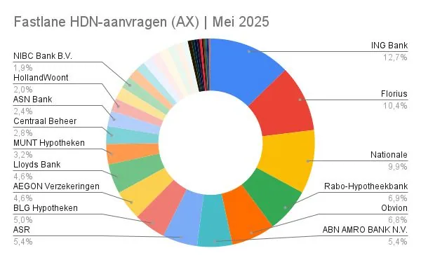
🆕 IT-28725: Maandelijks HDN-rapport met heldere verdeling per geldverstrekker
Vanaf nu genereert eBlinqx Hypotheekadvies automatisch een maandelijks intern HDN-rapport, waarin al onze HDN-aanvragen overzichtelijk zijn uitgesplitst naar AX en LX. In hetzelfde rapport zien we direct hoeveel aanvragen er per geldverstrekker en verzekeraar zijn ingediend én welk percentage van het totaal naar iedere partij gaat. Dit waardevolle inzicht helpt ons als Fastlane Team om veel gerichter te bepalen welke acceptatievoorwaarden we als eerste moeten inbouwen — zowel voor geldverstrekkers als voor verzekeraars. Hierdoor versnellen we onze doorontwikkeling, verminderen we interpretatiefouten en sluiten we nóg beter aan op de behoeften van onze gebruikers.
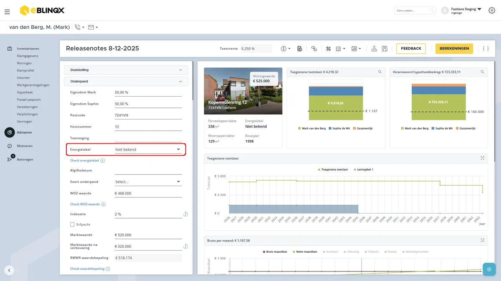
🐞 IT-28774: Altijd betrouwbare berekeningen zonder voorlopig energielabel
Vanaf nu rekent eBlinqx Hypotheekadvies alleen nog met definitieve energielabels of met de waarde “Niet bekend” als er geen geldig label beschikbaar is. Je hoeft je daardoor geen zorgen meer te maken dat oude, voorlopige labels uit 2015 invloed hebben op jouw hypotheek- of duurzaamheidsscenario’s. Bij prefill wordt het energielabel automatisch gevuld met “Niet bekend”, tenzij er een actueel, definitief label beschikbaar is uit een valide bron. Zo heb je altijd een helder vertrekpunt en kun je zelf gericht bepalen wanneer je het energielabel wilt aanvullen of actualiseren. Ook de berekeningen rondom energiebesparing, duurzaamheidsmodules en financieringsruimte sluiten nu volledig aan op deze nieuwe werkwijze. Dit geeft je meer grip op de uitkomsten, minder correctiewerk achteraf en een advies dat beter aansluit bij de werkelijke situatie van jouw klant.
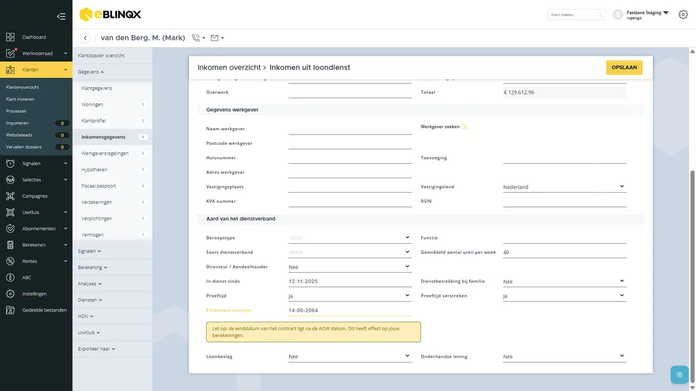
🆕 IT-28769: Waarschuwing bij contract einddatum na AOW-datum
Je krijgt nu automatisch een duidelijke waarschuwing wanneer de einddatum van een loondienstcontract na de AOW-datum van de eigenaar ligt. Zo ben je altijd alert op situaties die invloed kunnen hebben op je berekeningen, zonder dat dit je werkproces onderbreekt. Hierdoor kun je nóg zorgvuldiger en efficiënter adviseren.
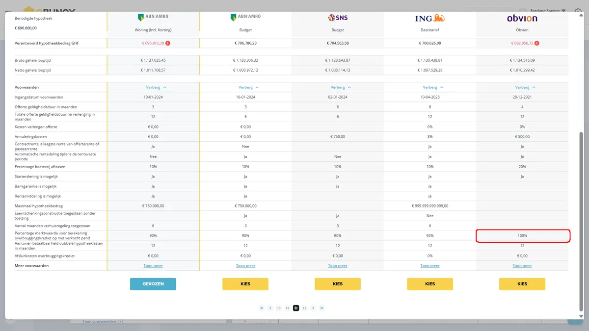
🐞 IT-28680: Stabiler gedrag bij overbruggingspercentage in ‘Geldverstrekkers vergelijken’
Je overbruggingsinstellingen blijven nu altijd precies zoals jij ze hebt ingevoerd. Wanneer je bij ‘Geldverstrekkers vergelijken’ een specifieke geldverstrekker kiest, wordt jouw ingestelde overbruggingspercentage of -bedrag niet meer automatisch aangepast. Zo behoud je zelf de controle en voorkom je dat je berekening onbedoeld verandert of vastloopt. Dat betekent: stabieler advieswerk en minder dubbel werk voor jou!
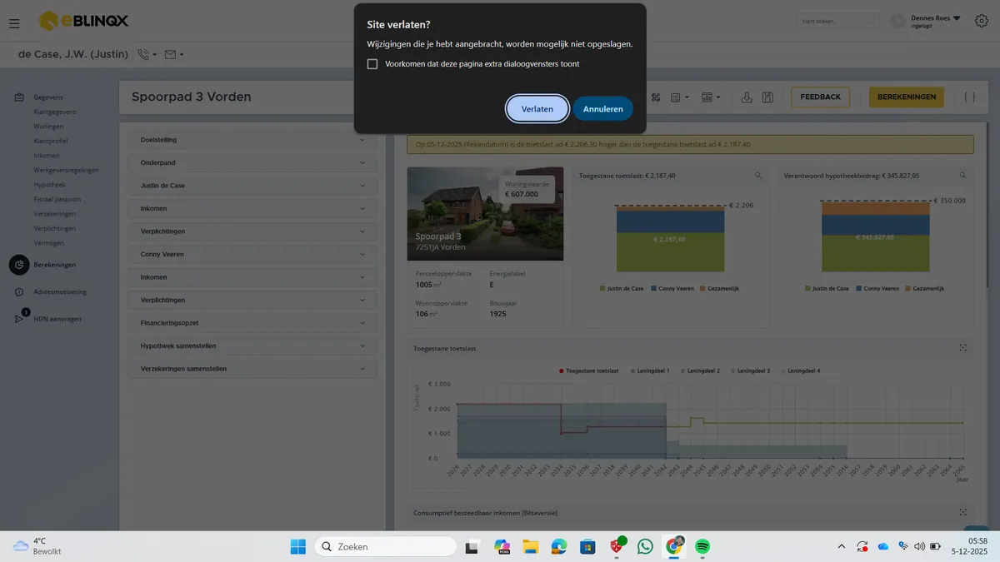
🐞 IT-28775: Geen onterechte verlaten-melding meer na opslaan
Na het succesvol opslaan van je gegevens krijg je voortaan geen onnodige browserwaarschuwing meer wanneer je de pagina verlaat. De melding verschijnt alleen nog als er écht niet-opgeslagen wijzigingen zijn. Zo werk je zonder ruis en met volledige zekerheid dat jouw wijzigingen goed bewaard zijn.
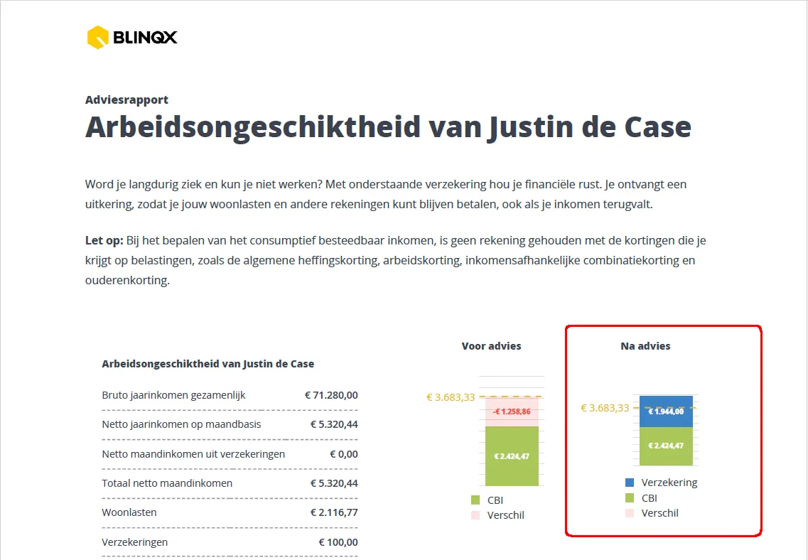
🐞 IT-28595: Consistente maanddekking voor inkomensverzekeringen in het rapport
Vanaf nu toont het adviesapport dezelfde correcte maandelijkse AO-terugvaldekking als je al in de applicatie ziet. Het rapport neemt niet langer het verzekerd jaarbedrag over, maar sluit volledig aan op de UI-berekening. Zo beschik je altijd over consistente informatie richting jouw klant en hoef je zelf geen controles of herberekeningen meer te doen. Dat maakt je advies helderder, nauwkeuriger en een stuk efficiënter.
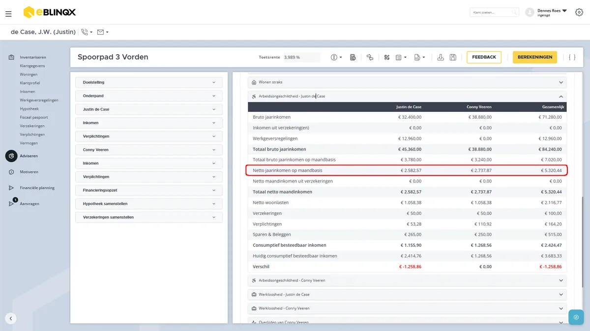
🐞 IT-28741: Juiste optelsom netto jaarinkomen bij CBI-advies
Bij het opstellen van een CBI-advies voor arbeidsongeschiktheid wordt het netto jaarinkomen op maandbasis nu weer correct berekend als de som van alle inkomensregels. Je ziet voortaan het totale inkomen van alle relevante inkomensbronnen in plaats van alleen de laatste regel. Daarmee kun je met meer zekerheid vertrouwen op de getoonde bedragen in je CBI-advies, sluit je beter aan op de werkelijke inkomenssituatie van jouw klanten en hoef je minder handmatig te controleren of na te rekenen. Dat maakt je advies sneller, nauwkeuriger en nog professioneler.
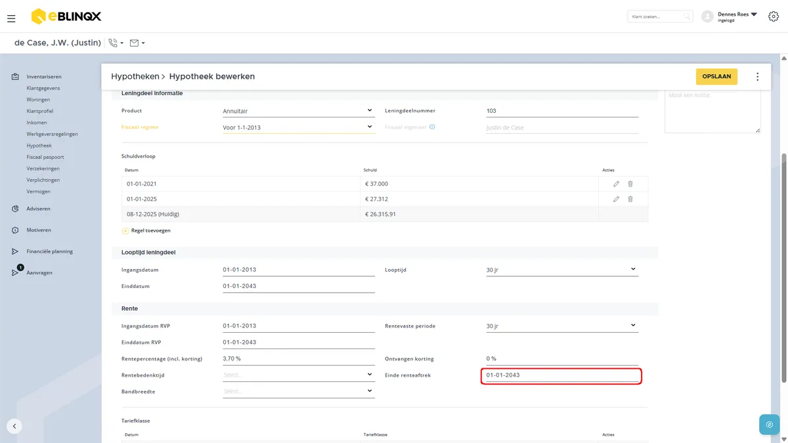
🐞 IT-28401: Correcte default voor ‘Einde renteaftrek’ bij oudere fiscale etiketten
Dankzij deze verbetering wordt de einddatum van de renteaftrek nu altijd automatisch en volgens de juiste fiscale logicaregels bepaald. Je hoeft hierdoor niet langer handmatig te corrigeren wanneer je een leningdeel met een fiscaal etiket van vóór 1-1-2013 invoert of bewerkt. Dat bespaart je tijd en voorkomt foutjes in je berekening. Wanneer de eerste renteaftrekdatum bekend is, wordt de einddatum nu keurig afgeleid door er 30 jaar bij op te tellen. Is deze datum onbekend, dan blijft het veld leeg en zie je een duidelijke hint zodat je precies weet wat je moet invullen. Zo werk je sneller, zekerder en volledig volgens de fiscale regels.
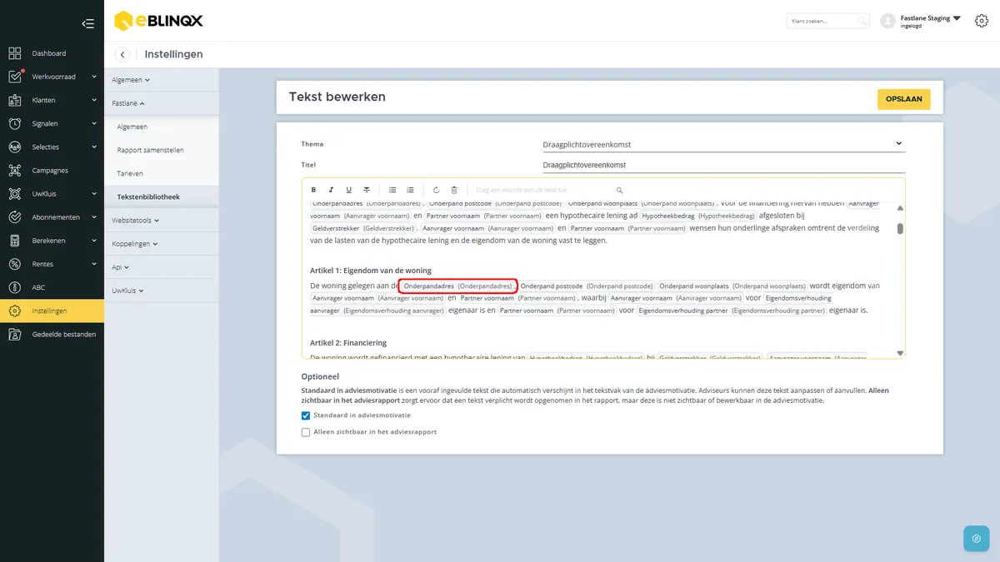
🆕 IT-28692: Nieuw dynamisch veld 'Onderpandadres'
Er is een nieuw dynamisch veld toegevoegd: Onderpandadres (berekening). Dit veld kun je direct gebruiken in rapportages, zoals de draagplichtovereenkomst. Hierdoor beschik je altijd over het juiste en meest actuele adres in jouw documenten, wat het opstellen van complete en foutloze rapportages een stuk eenvoudiger maakt.
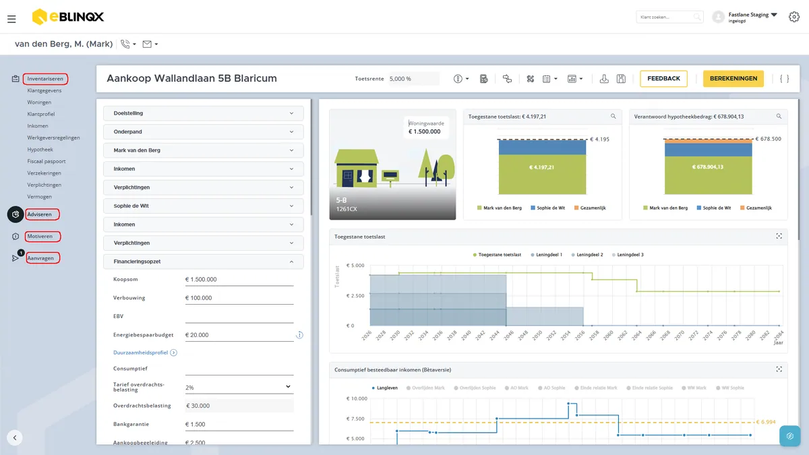
⚙️ IT-28683: Vernieuwde menubenamingen als voorproefje op eBlinqx Hypotheekadvies 2026
De menubenamingen zijn aangepast ter voorbereiding op de vernieuwde structuur en de frisse look & feel die eind 2026 wordt gelanceerd. Je ziet nu direct duidelijkere en meer toekomstbestendige termen in het menu:
-
Gegevens wordt Inventariseren
-
Berekeningen wordt Adviseren
-
Adviesmotivering wordt Motiveren
-
HDN Aanvragen wordt Aanvragen
Deze verbeterde menutaal helpt je nu al om intuïtiever te navigeren en sluit straks naadloos aan op de vernieuwde eBlinqx Hypotheekadvies-ervaring.
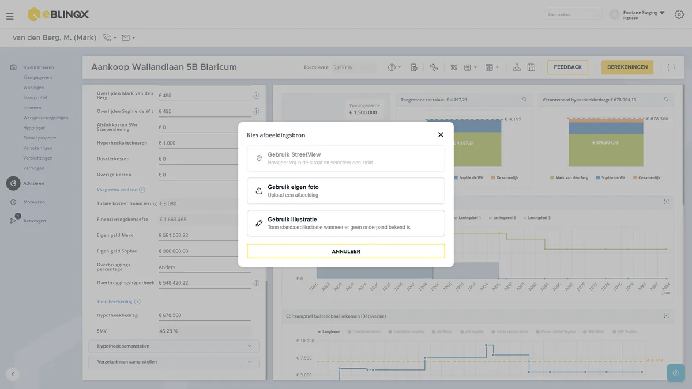
🆕 IT-28579: Handige foto-opties voor het onderpand in je berekening
Je krijgt voortaan volledige controle over de onderpandfoto in jouw eBlinqx Hypotheekadvies-berekeningen. Zodra je op de onderpandfoto klikt, verschijnt er een duidelijk keuzemenu met drie opties: Gebruik StreetView, Gebruik eigen foto of Gebruik illustratie. Hierdoor bepaal je altijd snel en eenvoudig welke afbeelding het beste past bij jouw advies.
Met Gebruik StreetView open je direct Google StreetView op basis van het onderpandadres, zodat je vrij kunt rondkijken en precies het juiste aanzicht kunt kiezen. Met Gebruik eigen foto upload je moeiteloos een afbeelding, inclusief bestandvalidatie. En met Gebruik illustratie kies je een nette placeholder wanneer er geen onderpand beschikbaar is.
Welke optie je ook kiest: de foto wordt automatisch opgeslagen en overal consistent doorgevoerd in je schermen en exports. Zo presenteer je altijd een verzorgde en passende visualisatie van het onderpand.
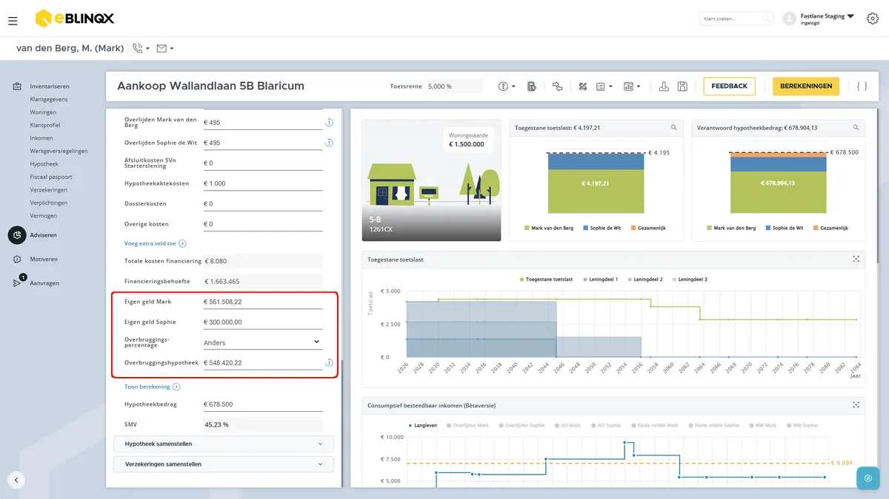
🐞 IT-28259: Handmatige inbreng eigen geld blijft nu altijd behouden
Je kunt vanaf nu volledig vertrouwen op jouw handmatig ingevoerde inbreng van eigen geld. Deze waarde wordt niet langer automatisch overschreven wanneer je andere dossieronderdelen aanpast, zoals het energielabel, de verbouwing of de woningwaarde. Hiermee voorkom je onverwachte correcties of foutmeldingen en blijft jouw financieringsopzet netjes intact. Je behoudt dus altijd zelf de regie, waardoor je zonder zorgen wijzigingen kunt doorvoeren én met meer zekerheid werkt in complexe dossiers.
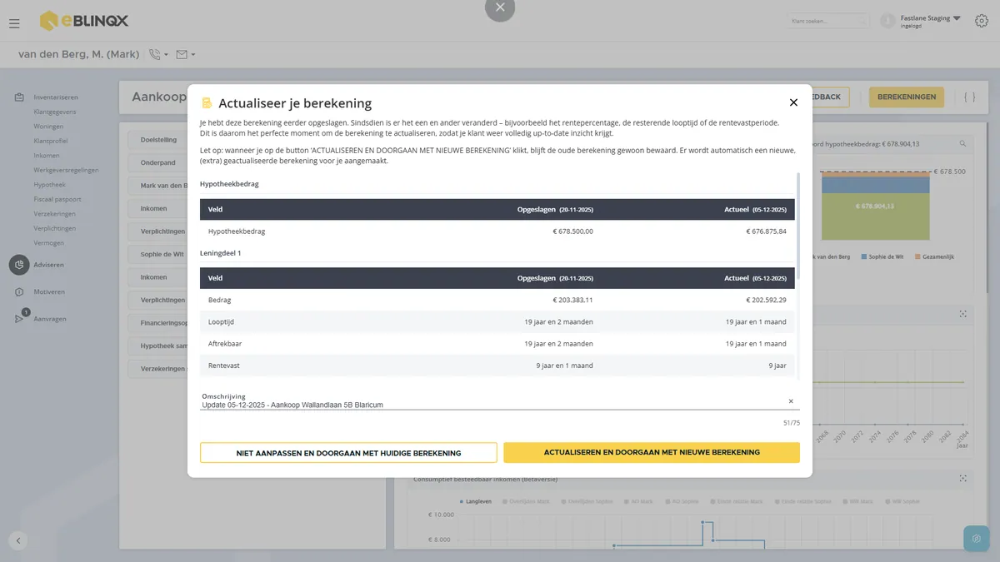
🐞 IT-28577: Duidelijkere actualisatie én betrouwbare aanpassingen
We hebben meerdere verbeteringen doorgevoerd in de actualisatielogica. De NHG- en overdrachtsbelastingvelden zijn uit de Actualiseren-modal verwijderd om verwarring te voorkomen, en de dubbele Revert-knoppen zijn netjes opgeschoond. Zo houd je het overzicht en kun je zonder afleiding actualiseren. Daarnaast kun je bedragen bij OHA-leningdelen weer soepel aanpassen zonder dat jouw invoer automatisch wordt overschreven. Ook worden OHA-gegevens nu correct en datumvast getoond in de Actualiseren-modal, zodat je altijd werkt met wat je eerder hebt opgeslagen.
Tot slot blijven handmatig aangepaste rentevastperiodes van bestaande leningdelen nu gewoon staan — ook wanneer je later opnieuw actualiseert. Zo behoud je altijd de controle en blijft jouw advies exact zoals jij het hebt ingericht.